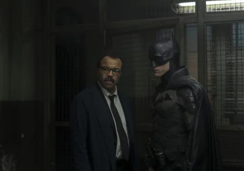
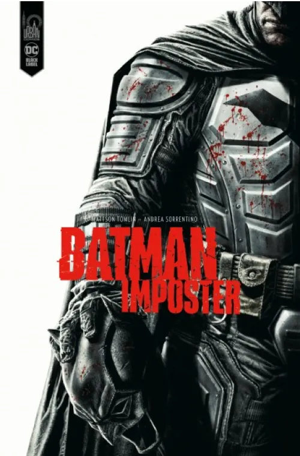
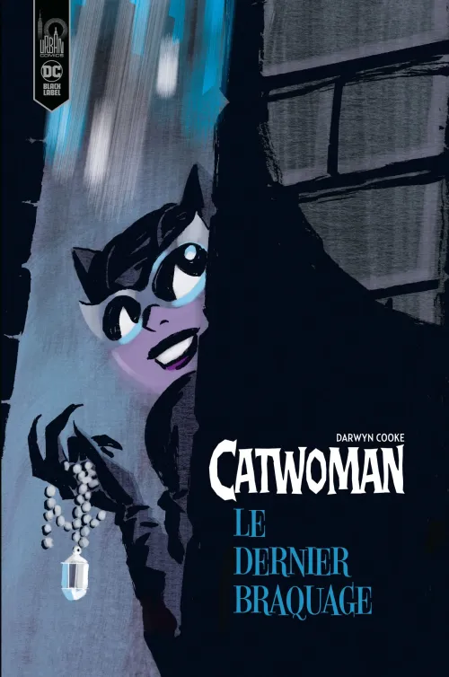
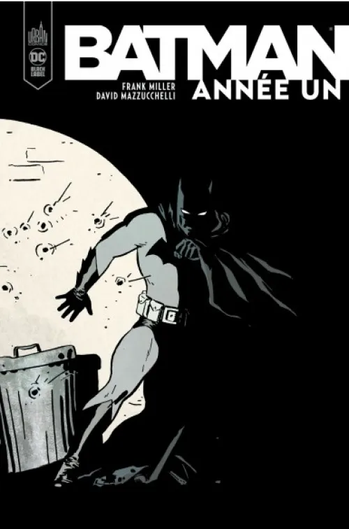
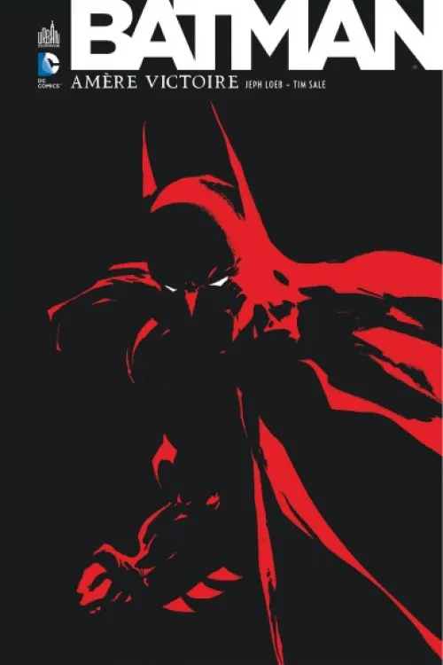

Film presentation

In this film we discover Batman two years after he decided to start his crime fighting journey, we see a Batman who works with the police and takes on the role of detective when faced with a new villain known as the Sphinx who leaves deadly riddles all over Gotham.
Inspector Gordon and Batman

The Sphinx
And even if this Batman doesn't follow the Dc comics, cinematographic universe, I personally don't find it disturbing, on the contrary we discover a new facet of the Gotham knight, who by the way is not yet called Batman but Vengeance.
Information about the film.
The Batman
is a film directed by Matt Reeves and released in 2022.
For the direction of The Batman
Matt Reeves was inspired by several existing Batman comics:
Batman Ego

Batman Impostor

Catwoman the last heist

Catwoman in Rome

Batman year one

Batman a long halloween

Batman bitter victory

The film received many positive reviews from audiences and press alike highlighting its dark, thriller like atmosphere and quality camerawork.
With a worldwide Box-office take of around $800 million, Matt Reeves was quick to confirm a sequel to The Batman, but patience will be required as production will not begin until mid-2023.
My opinion
The reason i chose The Batman
as a movie is because we finally got a feature film that represents Batman in his early days
which had never been seen in the previous movies.
Many people who have only seen Batman in the movies may not know that before he became the Gotham vigilante that everyone knows with gadgets and crazy villains.
Batman in his early days was just a simple detective fighting against the mob and the various organizations that run Gotham City.
For me, this is one of the best Batman films released to date.
Matt Reeves Filmography

Matt Reeves is an American director, producer and screenwriter.
In the 90s he directed 2 films, a horror film Future Shock
(1994) and a romantic comedy
The Pallbearer
(1996).
As well as a series alongside JJ Abrams from 1998 to 2002.
It was not until 2008 when he directed the science fiction monster film Cloverfield
that he gained international recognition and success,
and in 2022 he returned with the film The Batman which was a huge success.
and in 2022 he returned with The Batman
which was a huge success.
Here are the different films he has directed:
1993 : Future Shock

1996 : The Pallbearer

2008 : Cloverfield

2010 : Let me in
2014 : Dawn of the planet of the apes

2017 : War for the planet of the apes

2022 : The Batman